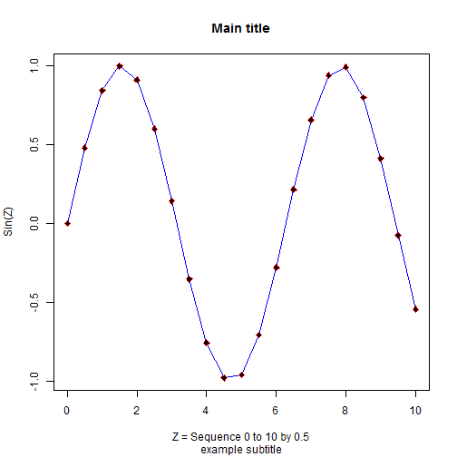
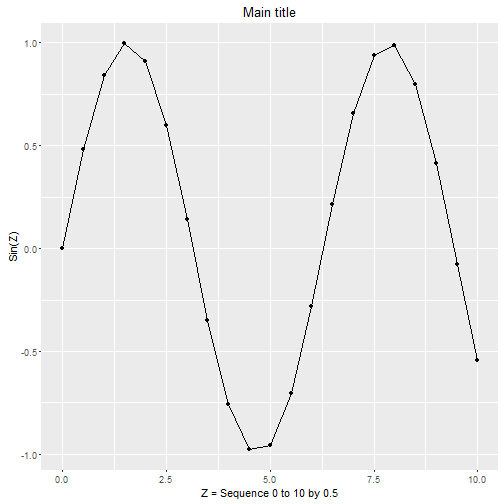

Workshop 1 - Part 2
Working in the RStudio
We will go through many of the same steps we did in Part 1, but this time we will run them in RStudio so you can see how the RStudio IDE (integrated development environment) helps mangage your data, code and output much more efficiently.
In Workshop 3 we will also explore the EXCELLENT RMarkdown functionality built into RStudio combining analysis with documentation and report writing making the entire process seamless and efficient!
While RStudio has many more windows and menus enabling point-and-click interaction with R codes and functions, it is not the typicaly GUI (graphical user interface). You cannot perform canned statistical analyses through point-and-click menus in R and RStudio. Instead you record everything - all commands - for loading, manipulating, analyzing and even reporting all of your results. This enables complete documentation of the entire process greatly improving the ability to reproduce your research!!
Launch RStudio
Go ahead and launch RStudio and we will explore the interface.
When RStudio opens, your interface may not look the same as mine so we will systematically go through each window and explain what it does.
If you do not have a script window open, go ahead and create one. Go to "File/New File/R Script". This should open a blank window in the upper left corner of the software interface. This is basically a simple text window where we will type our R codes and then execute them rather than typing them in the "console" window (typically located in the bottom left corner).
In this window let's put in the commands we ran before in Part 1.
2 + 2
3 + (4*8)
3 + 4*8
6 + (8**2)
12^2
pi
4 * pi
You will notice that as each command above is "run" (executed) the command is echo'd in the console window at the bottom left as well as the output which is also shown in the console like we did before in the Basic R interface.
Again, what if we want to save these values? To do so we have to assign them <- to a variable. So, let's run through the next set of commands. As you do so, watch the upper right window for the "Global Environment".
x <- 3 * 5
x
y <- 1:12
y
z <- seq(0,10,.5)
sinz <- sin(z)
You should notice that the variables created above now show up in the top right "Global Envrionment" window. You will notice that the variable x shows the value of 15. However, the other variables y, z, and sinz all show a list of numbers. These are all vectors.
x is a vector of length one (1) since it has only 1 element. You can confirm this using the length() function. Try also running the length() function for each of the variables x, y, z, and sinz.
> length(x)
[1] 1
> length(y)
[1] 12
> length(z)
[1] 21
> length(sinz)
[1] 21
This is only one way to learn about the variables you created. You will also notice that in the upper right window that each vector that has more than 1 element the size of the vector is listed inside the brackets []'s. Each vector is also listed as to the type of vector it is. z and sinz are "numeric" vectors whereas y is an "integer" vector. This can also been seen using the structure function str() and class() function. Try using these functions and compare the results exploring the structure and class of z and y.
> str(y)
int [1:12] 1 2 3 4 5 6 7 8 9 10 ...
> class(y)
[1] "integer"
> str(z)
num [1:21] 0 0.5 1 1.5 2 2.5 3 3.5 4 4.5 ...
> class(z)
[1] "numeric"
Another way to create vectors of data is to use the combine function c() which combines elements together. Try the following:
> a1 <- c(1,2,3,4,10,11,12,13)
> a2 <- c('a','g','f','r','t','s')
> a3 <- c(TRUE,FALSE,TRUE,TRUE,FALSE)
> a4 <- c(1,2,'a','b',TRUE,FALSE)
> a5 <- c(1,2,3,4,TRUE,FALSE)
Use the class() function and see what type each vector is. What class type is a4? Why? What about a5?
> class(a1)
[1] "numeric"
> class(a2)
[1] "character"
> class(a3)
[1] "logical"
> class(a4)
[1] "character"
> class(a5)
[1] "numeric"
When types are mixed, R sets them all to the type that will best encompass and retain the values.
We will cover many more variable types in the later Workshops. However, let's look at 1 more variable type that is the mainstay of most R data handling and analyses - the Data Frame. One way to create a data frame is to combine vectors of the same size together. We can combine these using the data.frame() function. For this example we will combine the y vector we created with numbers 1 to 12 and combine these with the saved constant vectors of the month names (month.name) and month abbreviations (month.abb) - all 3 vectors of length 12 - although y is an integer vector whereas month.name and month.abb are both character vectors. Data Frames are designed to combine vectors of different types together as long as they are the same length.
> df1 <- data.frame(y, month.name, month.abb)
You will notice that this new object df1 is created and shows up in the upper right window but is now listed as "Data" instead of simply as "Values". There is also now a little blue circle with an arrow in it just to the left of object df1. Click this little arrow. This opens up a list of each of the variables now contained inside this data frame. You can also "View" the data in this data frame by clicking on the little table/grid icon to the right of the object listed in the top right window. This basically runs the View(df1) code without you having to type it. In fact, check the console window at the lower left to confirm that this is correct.
Let's load a package with added functionality - ggplot2, aka "The Grammar of Graphics"
What are packages? R packages are how additional functionality is added to R beyond what is available in the base software system. There are 3 main ways to find packages of interest to add functionality. The biggest of the 3 is CRAN which is the Comprehensive R Archive Network. As of this writing there are over 7000+ packages on CRAN https://cran.r-project.org/web/packages/. Other places to get R packages include GitHub https://github.com/; Bioconductor https://www.bioconductor.org/ or simply getting the ZIP file from the creator/maintainer directly.
There are a couple of ways to install packages. Using the RStudio menus, click on "Tools/Install Packages". Usually the default Repository will be CRAN. Here you simply type in the name of the package you want "ggplot2". Alternatively, you can run the install.packages() function. The command to install ggplot2 is
install.packages("ggplot2")
Once a package is installed, it is now located on your hard drive but is not yet ready to be used in R. Now you have to load the package into memory so that the functions inside that package can be used. For this you need the library() function. Let's load ggplot2 and then run help on it to read more about the package.
> library(ggplot2)
> help(package="ggplot2")
As a quick test, let's try out the qplot() or "quick plot" function inside the ggplot2 package. We'll use the following code to replicate the plot we did before using the plot() commands in base R.
Here is the previous plot we did using the base R commands.
> plot(z, sinz,
+ xlab = 'Z = Sequence 0 to 10 by 0.5',
+ ylab = 'Sin(Z)',main='Main title',
+ sub = 'example subtitle')
> lines(z, sinz, col = 'blue')
> points(z, sinz, pch = 23, col = 'red', bg = 'black')

Here is a similar plot using qplot. It will not look exactly the same. We will learn more powerful graphing functions using ggplot2 and other packages in the later workshops.
> qplot(z, sinz,
+ geom = c("point", "line"),
+ xlab = 'Z = Sequence 0 to 10 by 0.5',
+ ylab = 'Sin(Z)',
+ main = 'Main title')

Notice the added graphics window at the lower right side of the RStudio interface. There is more functionality for viewing and exporting graphics from this window. Take a few moments and explore the "Plots" window in the lower right. Click "Zoom" to view the plot in a larger detached window. Also explore the options under the "Export" menu item within this "Plots" window.
Complete R code script from Part 2
Note that the last command calls sessionInfo() which is a good practice to always do as this lists the current version of R you are running, what platform/operating system you are using as well as all packages loaded.
2 + 2
3 + (4*8)
3 + 4*8
6 + (8**2)
12^2
pi
4 * pi
x <- 3 * 5
x
y <- 1:12
y
z <- seq(0,10,.5)
sinz <- sin(z)
length(x)
length(y)
length(z)
length(sinz)
str(y)
class(y)
str(z)
class(z)
a1 <- c(1,2,3,4,10,11,12,13)
a2 <- c('a','g','f','r','t','s')
a3 <- c(TRUE,FALSE,TRUE,TRUE,FALSE)
a4 <- c(1,2,'a','b',TRUE,FALSE)
a5 <- c(1,2,3,4,TRUE,FALSE)
class(a1)
class(a2)
class(a3)
class(a4)
class(a5)
df1 <- data.frame(y, month.name, month.abb)
install.packages("ggplot2")
library(ggplot2)
help(package="ggplot2")
plot(z, sinz,
xlab = 'Z = Sequence 0 to 10 by 0.5',
ylab = 'Sin(Z)',main='Main title',
sub = 'example subtitle')
lines(z, sinz, col = 'blue')
points(z, sinz, pch = 23, col = 'red', bg = 'black')
qplot(z, sinz,
geom = c("point", "line"),
xlab = 'Z = Sequence 0 to 10 by 0.5',
ylab = 'Sin(Z)',
main = 'Main title')
sessionInfo()
Here is my current SessionInfo for Workshop 1.
> sessionInfo()
R version 3.2.3 (2015-12-10)
Platform: x86_64-w64-mingw32/x64 (64-bit)
Running under: Windows >= 8 x64 (build 9200)
locale:
[1] LC_COLLATE=English_United States.1252
[2] LC_CTYPE=English_United States.1252
[3] LC_MONETARY=English_United States.1252
[4] LC_NUMERIC=C
[5] LC_TIME=English_United States.1252
attached base packages:
[1] stats graphics grDevices utils datasets methods base
other attached packages:
[1] ggplot2_2.0.0 knitcitations_1.0.7 Rgitbook_0.9
loaded via a namespace (and not attached):
[1] Rcpp_0.12.2 knitr_1.11 magrittr_1.5
[4] munsell_0.4.2 colorspace_1.2-6 R6_2.1.1
[7] bibtex_0.4.0 stringr_1.0.0 httr_1.0.0
[10] plyr_1.8.3 tools_3.2.3 grid_3.2.3
[13] gtable_0.1.2 digest_0.6.8 RJSONIO_1.3-0
[16] RefManageR_0.8.63 formatR_1.2.1 bitops_1.0-6
[19] codetools_0.2-14 RCurl_1.95-4.7 evaluate_0.8
[22] labeling_0.3 stringi_1.0-1 scales_0.3.0
[25] XML_3.98-1.3 lubridate_1.5.0